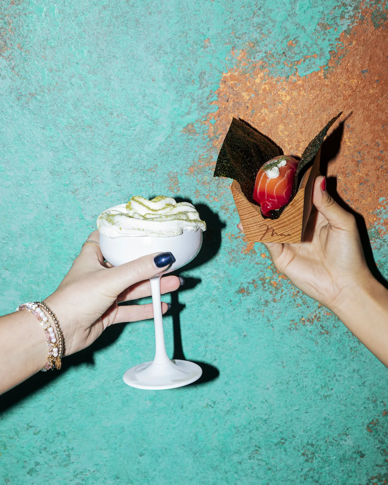
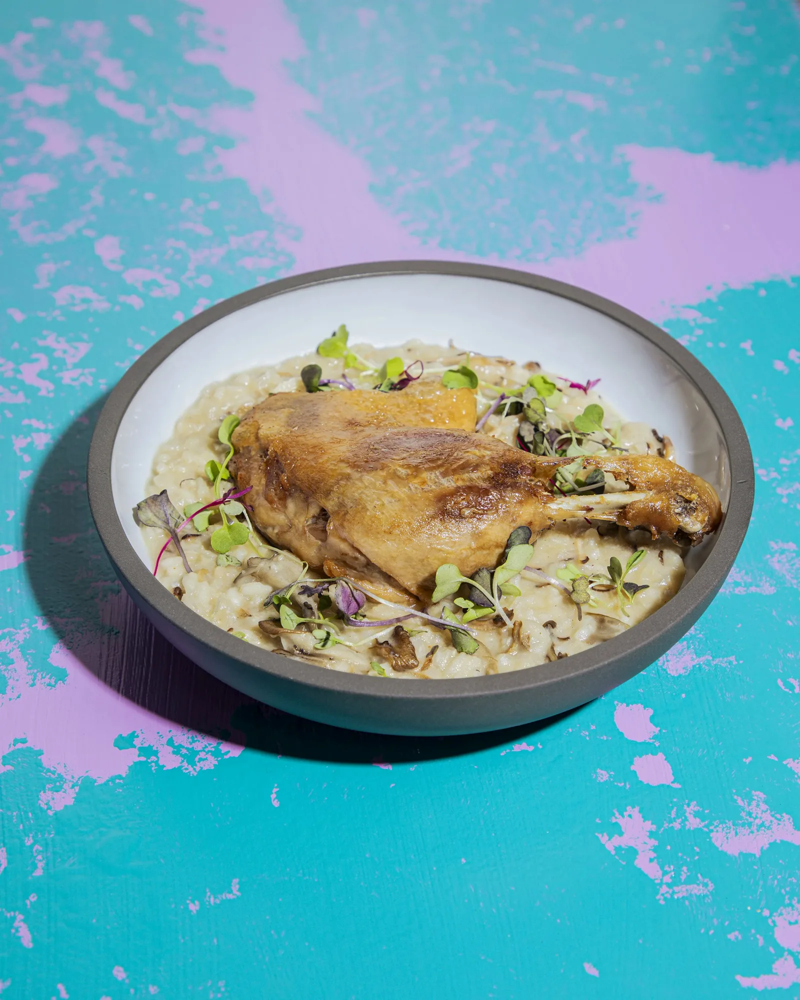
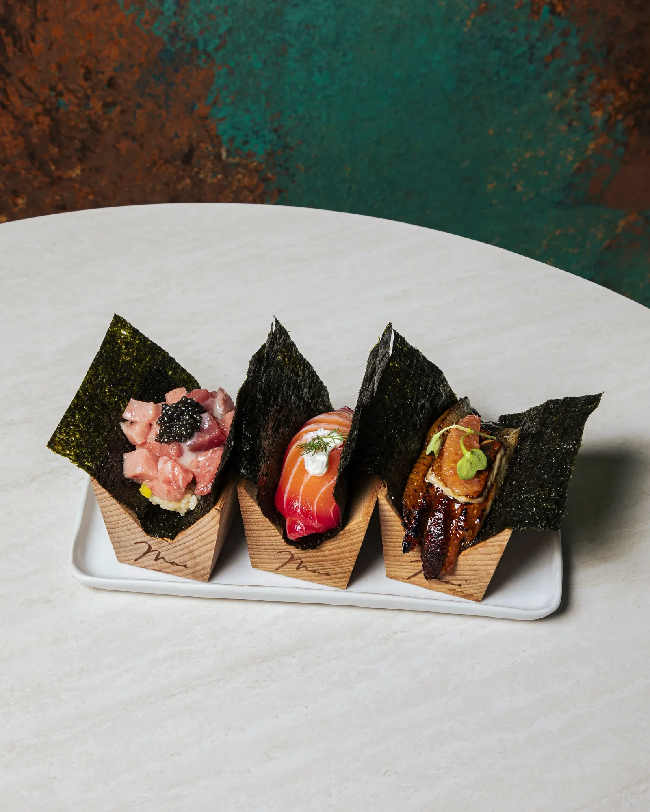

THE STORY — 01
Right at the entrance to Boston’s Seaport, Mai brings a new perspective to the modern izakaya — the Japanese tradition of simplicity, met with the complexity of French culinary technique.
THE STORY — 02
As a group of Asian American restaurateurs, we wanted a restaurant that pushes the boundaries of what Asian food can be — while respecting its roots.


THE STORY — 03
The menu, the curated craft sake list, the Japanese-inspired sake cocktails — each tells the story of our team’s dozens of trips to Japan, brought back to Boston’s hottest neighborhood.